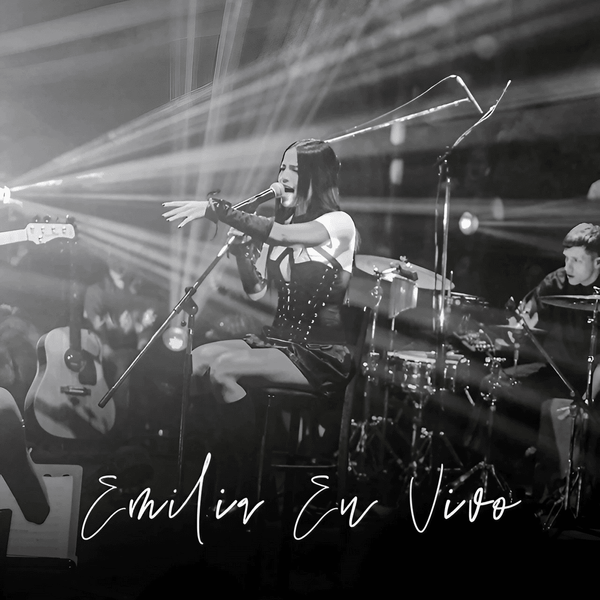

¿Tú crees en mí? (2022)
Es el primer álbum de estudio de la cantante y compositora argentina Emilia, publicado el 31 de mayo de 2022 por la compañía Sony Music Latin.Musicalmente, el álbum abarca varios géneros, entre ellos, pop, R&B y urbano. Todas las canciones fueron escritas por Emilia y Daniel Ismael Real, con apoyo de músicos como Duki y Elena Rose. Asimismo, el álbum incluye colaboraciones con Duki, Nicki Nicole y Tiago PZK.Líricamente, Tú crees en mí? abarca temas como el empoderamiento, el amor, la superación de rupturas amorosas, la sensualidad y el disfrute.
- latin girl
- como si no importara
- cuatro veinte
- Intoxicao
- mi otra mitad
- la balada
- rapido lento
- cielo en la mente
Escuchar en spotify:
Emilia en Vivo (2022)
El álbum Emilia en Vivo refleja no solo su talento vocal, sino también su conexión con el público durante las presentaciones en vivo. Este trabajo es parte de su discografía, que incluye dos álbumes de estudio y varios sencillos que han resonado en la escena musical latina.
- De Enero a Diciembre- Emilia en Vivo
- BB- Emilia en Vivo
- Intoxicao- Emilia en Vivo
- mi otra mitad- Emilia en Vivo
- rápido lento- Emilia en Vivo
- cielo en la mente- Emilia en Vivo
- Perreito Salvaje- Emilia en Vivo
- como si no importara- Emilia en Vivo
- cuato veinte- Emilia en Vivo
Escuchar en spotify:
.mp3 (2023)

Emilia Mernes, la talentosa cantante argentina, ha lanzado su segundo álbum titulado .mp3, que rinde homenaje a los sonidos icónicos de los años 2000. Este álbum incluye una mezcla de géneros como pop, R&B, dance y hip-hop, presentando una Emilia renovada tanto musical como estéticamente.
- Facts.mp3
- Jagger.mp3
- JET_Set.mp3
- IConic.mp3
- La_Original.mp3
- GTA.mp3
- Exclusive.mp3
- No_Se_Ve.mp3
- 24_Hs.mp3
- Muñecos.mp3
- Ojitos_Verdes.mp3
- A_1000_Km.mp3
- Guerrero.mp3